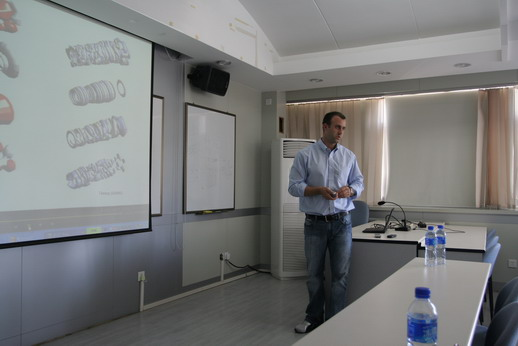
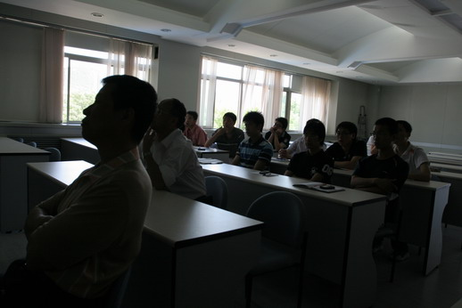

 |
Dr. C. Tinney visited the Turbulence Control Lab on June 23 2010 under the invitation of Dr. Gao. Dr. Tinney is an assistant professor in the Department of Mechanical and Aerospace Engineering of the University of Texas at Austin. Dr. Tinney is an active scientist in the field of turbulence flow structures and active flow control. He authored and co-authored many journal papers including a few papers published in the prestigious Journal of Fluid Mechanics. Dr. Tinney gave a talk entitled "Investigation of the Low Dimensional Flow structures using proper orthogonal decomposition". |
 |